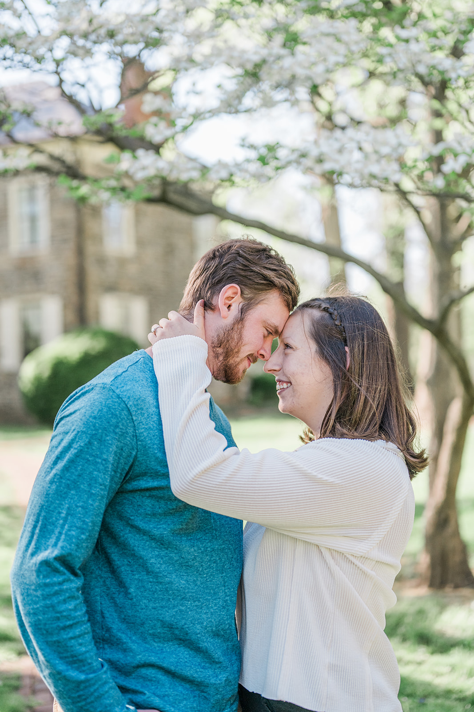

Venue inquiries
Let’s start with your date.
Tell us your preferred date, approximate guest count and what you’re planning. We welcome inquiries about weddings, showers, birthday parties and holiday gatherings. Two Mile House is a venue-only rental.

Molly Kate Photography01 · Consider a date
When are you thinking?
Example dates for design review. Actual availability must be confirmed with the venue.
May 2027
| Mo | Tu | We | Th | Fr | Sa | Su |
|---|
Choose an example date, enter a date in the form, or tell us you are flexible.
Use arrow keys to move between days and Enter to select. You can also enter a date directly.
02 · Tell us a little
Your venue inquiry.
Use sample details. This preview does not send or save inquiries. Required fields are marked *.
Find the place
Find Two Mile House.
Carlisle, Pennsylvania
Use the venue address when looking up the property. The historical society’s museum is at a different location.
Discuss parking, access routes and your guests’ needs before making arrangements.
Explore the house & groundsGood to know
Before you try the preview.
The design demonstrates a date inquiry. It is not a booking service.
Is this calendar live?
No. The dates and statuses are examples for design review. Actual availability must be confirmed with the venue.
Does the preview send an inquiry?
No. Use sample details to try the form. It sends and saves nothing, and no date is held or reserved.
Can we inquire without choosing an exact date?
In this preview, choose the flexible-date option. Your inquiry can begin with an approximate season or questions about the venue.